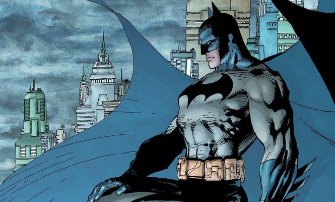
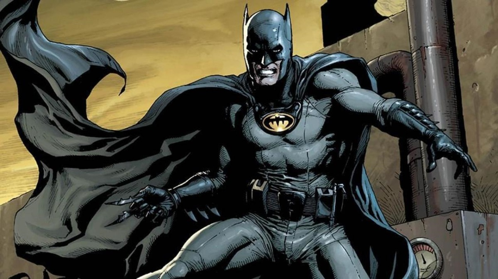
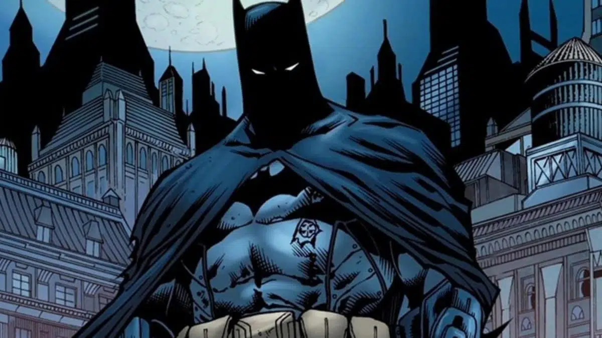
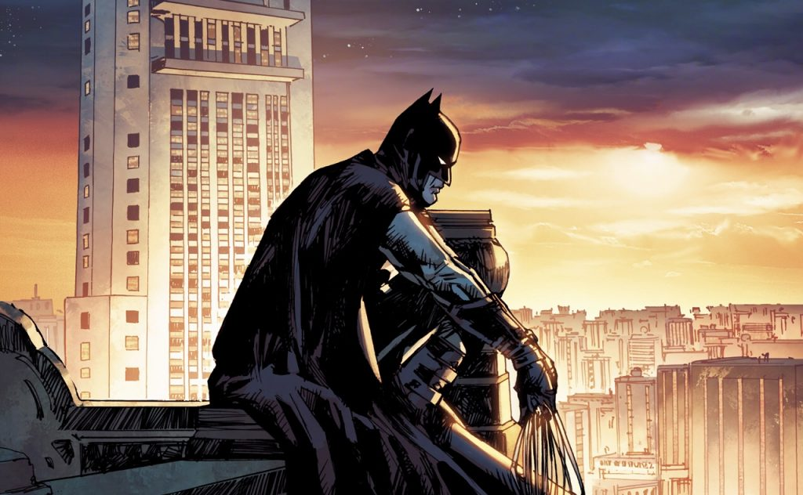
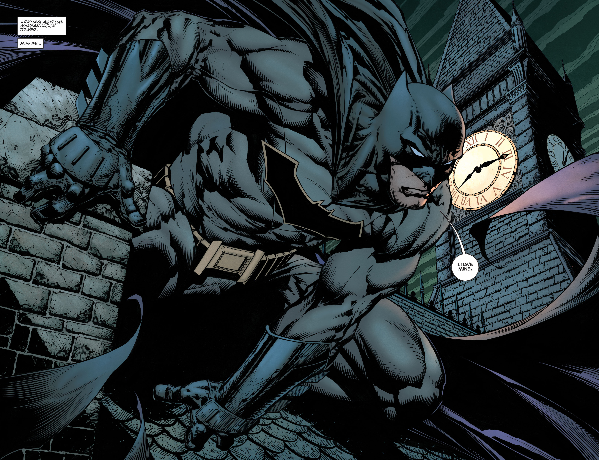
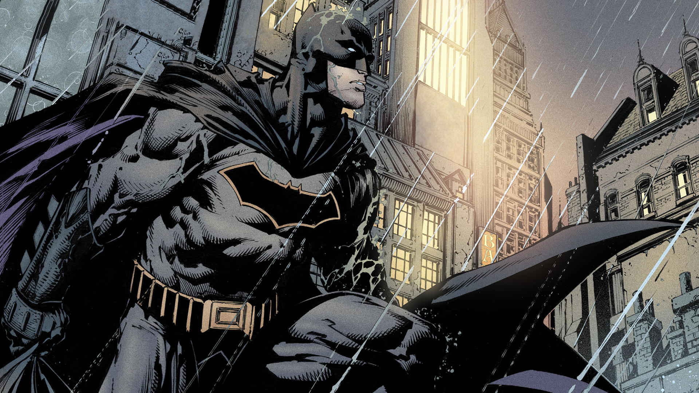
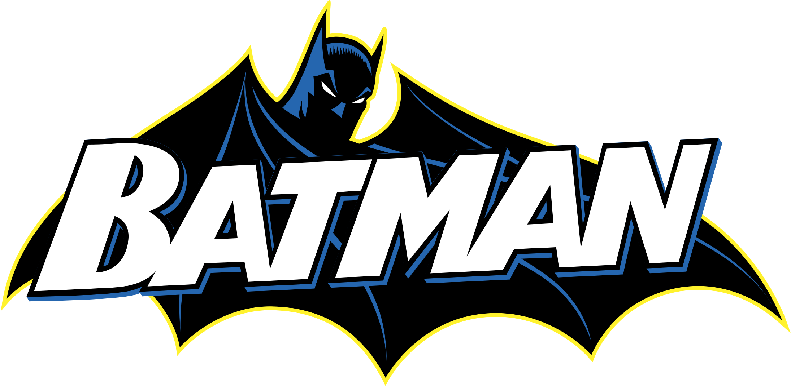

Batman é uma série regular de histórias em quadrinhos americana protagonizada pelo herói da DC Comics do mesmo nome. O personagem apareceu pela primeira vez na revista Detective Comics em Maio de 1939. Batman tornou-se tão popular que ganhou uma série regular de quadrinhos homônima própria, que começou a ser publicada na Primavera de 1940.